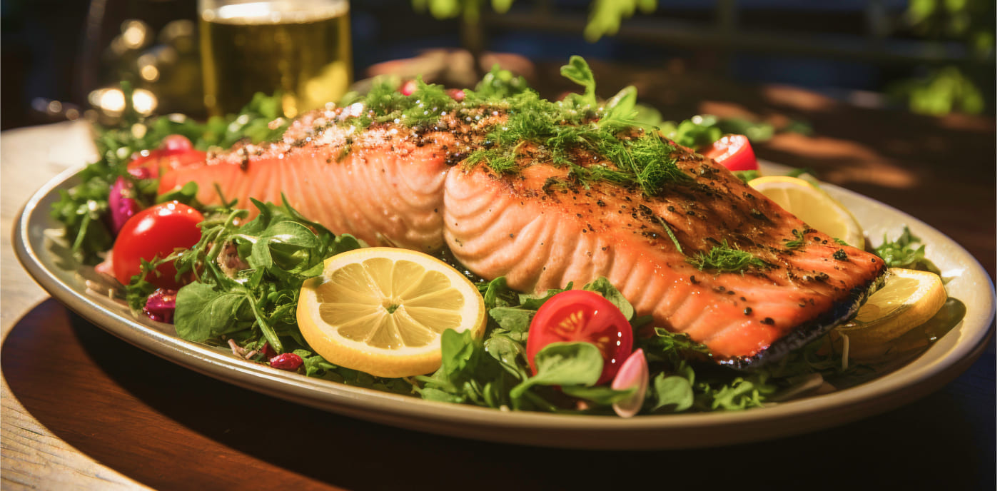

Мифы и реальность о витамине D
Автор, редактор и медицинский эксперт: Фамилия Имя Врача
Содержание:
Вся правда о витамине Д
Витамин Д: мифы и реальность
Миф 1: оптимальную дозу витамина Д можно получить при загаре
Миф 2: можно загорать с солнцезащитным кремом и получать витамин Д
Миф 3: продукты питания полностью обеспечивают витамином Д
Миф 4: дефицит витамина Д можно определить самостоятельно
Миф 5: витамин Д нужно принимать каждый день и только утром
Миф 6: принимать витамин Д летом нельзя
Миф 7: люди с темной кожей не страдают от дефицита витамина Д
Интерес к витамину D в мире усилился сравнительно недавно. Информации об этом микронутриенте и его пользе было мало 1. Данный факт стал причиной появления множества мифов о витамине D и несерьезного отношения к нему — люди недооценивают его важность для здоровья. Между тем, у 52–92% населения России есть дефицит витамина D, причем многие даже не догадываются об этом 2.
Вся правда о витамине D
Витамин D — биологически активное вещество, которое синтезируется кожей под влиянием УФ-излучения и поступает в организм вместе с продуктами питания2. Рецепторы витамина D есть во многих клетках и тканях организма, поэтому он участвует в большом количестве процессов2. Однако главная его функция — регуляция обмена кальция и фосфора. Так же, одна из важных функций витамина D - обеспечение здорового состояние костной ткани2.
Дефицит этого вещества повышает риск развития большого количества заболеваний, влияет на физическое и психическое состояние человека2,3. Недостаток витамина D в организме может стать причиной бесплодия, фиброза почек, сахарного диабета, сердечно-сосудистых заболеваний, рака молочной железы и толстой кишки, деменции и болезни Альцгеймера1,2.
Витамин D: мифы и реальность
Рассмотрим основные мифы о витамине D и расскажем, почему им не стоит верить.
Миф 1. Оптимальную дозу витамина D можно получить при загаре
Действительно, УФ-излучение — самый значимый источник витамина D1. Однако получить нужное количество этого вещества при помощи загара в нашей стране почти невозможно3,4. Большинство крупных городов России расположены в северных широтах. Здесь солнечные лучи падают под острым углом и частично рассеиваются в атмосфере. В конце осени, зимой и ранней весной кожа почти не вырабатывает витамин D, сколько бы человек ни находился под солнцем2. К тому, же УФ-излучение — один из факторов риска развития рака кожи5, поэтому врачи рекомендуют ограничивать солнечные ванны.
Получить нужное количество витамина D в соляриях тоже невозможно1. Доля необходимых для синтеза этого вещества УФ-лучей средней длины в искусственном излучении — не более 10%1.
Современные исследования показали, что УФ-излучение не является оптимальным источником витамина D3. Поэтому рекомендуется принимать препараты с активным веществом, которое идентично естественному витамину D. Лекарства безопасны в дозировании и не несут онкологических рисков.
Миф 2: можно загорать с солнцезащитным кремом и получать витамин D
Крема и гели с УФ-фильтрами снижают выработку витамина D на 95–98%3. Поэтому пребывание под солнцем будет абсолютно бесполезным с точки зрения получения этого активного вещества.
Миф 3: продукты питания полностью обеспечивают витамином D
Почти невозможно составить рацион, который бы обеспечивал организм нужным объемом витамина D1. Значимое количество этого вещества содержится лишь в некоторых продуктах питания, например, в диком лососе и сельди1,2,3.
Чтобы обеспечить организм витамином D, взрослый человек должен получать 1000–2000 МЕ вещества в сутки1. С возрастом синтез витамина ухудшается. Поэтому людям старше 50 лет требуется повышение дозы1.
Миф 4: дефицит витамина D можно определить самостоятельно
Все признаки дефицита витамина D неспецифичны. Основные симптомы гиповитаминоза — дискомфорт и боли в мышцах и костях скелета, однако, чаще люди замечают другие симптомы, например, усталость, повышенную утомляемость, снижение работоспособности и тд1. Такие признаки являются неспецифическими и характерны и для других состояний и заболеваний.
Выявить, есть ли в организме проблемы с витамином D, можно только с помощью анализа крови на определение сывороточного уровня 25(OH)D1. Если уровень витамина D в крови в пределах 30–75 нг/мл1, значит, все в порядке. Когда показатели понижены, гиповитаминоз нужно корректировать. Для лечения и профилактики дефицита витамина D применяют препараты с колекальциферолом — витамином D3.
Миф 5: витамин D нужно принимать каждый день и только утром
Витамин D накапливается в жировой ткани и долго хранится в организме. Поэтому принимать его каждый день, как водорастворимые витамины, не нужно. Время приема кальциферола также не имеет значения. Ключевую роль играет только доза витамина D, которую подбирают исходя из уровня 25(ОН)D3.
Девилам — первый в России препарат с витамином D3 с уникальной матричной формой6. Колекальциферол в таблетках Девилам защищен от воздействия факторов внешней среды во время хранения. При попадании в организм он высвобождается постепенно. Это помогает обеспечить человека нужной дозой витамина D на длительное время и исключает риск передозировки7,8.
Препарат Девилам нужно принимать по 1 таблетке, 50 000 МЕ всего 1 раз в неделю6. Для коррекции недостаточности и дефицита витамина D разработан препарат с дозой 50 000 МЕ, а для поддержания оптимального уровня вещества в организме — с дозой 5 000 МЕ6.
Миф 6: принимать витамин D летом нельзя
Прием и доза витамина D не зависят от времени года3. Недостаток или дефицит этого активного вещества возможен и летом. Принимать колекальциферол нужно с учетом исходного уровня витамина D в организме3.
Миф 7: люди с темной кожей не страдают от дефицита витамина D
Чем темнее кожа, тем больше в ней содержится пигмента меланина. Он снижает способность кожи вырабатывать витамин D4. Исследования показали, что уровень 25(OH)D у темнокожих людей ниже, чем у светлокожих. Поэтому люди с темной кожей чаще испытывают недостаток этого витамина4.
Аналогичная ситуация с загаром. Чем дольше мы пребываем на солнце, тем больше пигмента меланина накапливается в коже. Людям с сильным загаром нужно увеличивать продолжительность солнечных ванн, чтобы получить нужную дозу витамина D.
Коротко о главном
Список литературы
Имеются противопоказания. Перед использованием ознакомьтесь с инструкцией или проконсультируйтесь со специалистом.